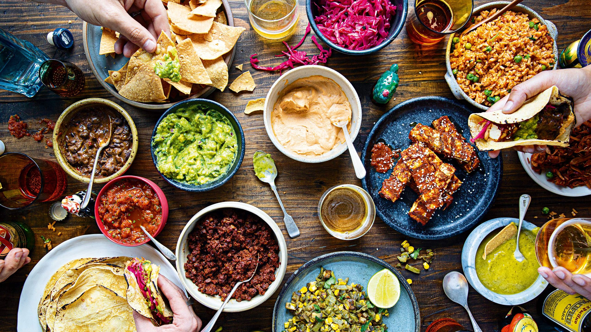

Welcome to MelbEats
MelbEats is a restaurant discovery and reservation platform for Melbourne. You can browse restaurants, get a recommendation based on your preferences, and book a table all in one place.

What This Platform Does
The platform is built around three things: helping you find a restaurant that suits what you are looking for, giving you a recommendation if you are not sure where to go, and letting you make a reservation without needing to call ahead.
MelbEats is aimed at anyone eating out in Melbourne — whether that is families looking for something kid-friendly, people on a date, professionals booking a business lunch, or tourists who do not know the city well enough to pick somewhere themselves.
Get Started
Use the navigation above or the links below to get started.
- Browse all restaurants — see the full list with details and prices
- Get a recommendation — answer a few questions and get a matched restaurant
- Make a reservation — book a table at your chosen restaurant
- Create an account — register to manage your reservations